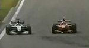
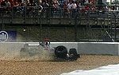
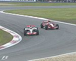

De: La Frikipedia, la enciclopedia extremadamente seria.
De: La Frikipedia, la enciclopedia extremadamente seria. De: La Frikipedia, la enciclopedia extremadamente seria.
| De la serie Circuitos de F1: | |||
| Circuito de Nurburgring | |||
| |||
| Localización: | Nurburg, Alemania | ||
| Sede del GP: | GP de Europa (hasta 2008) (actualmente) | ||
| Longitud: | Antes 28,265 km
Ahora 5,148 km | ||
| Nº vueltas (En la F1): | 60 | ||
| Piloto con más victorias: | Maikel Chumajer (5) | ||
| Años en la F1: | 81 (No te lo esperabas, ¿eh?) | ||
| Índice de peligrosidad: | Baja | ||
| Número de accidentes por carrera: | Pocos, por lo general | ||
| Valoración general: | Sigue siendo mítico | ||
«Pedro, vete cambiando de hombre del tiempo, ¿eh? Porque madre mía, para las previsiones lo lleváis claro»
~ Gonzalo Serrano en el GP del 2007, cuando cayó un tormentón después de que el meteorólogo de McLata pronosticara una carrera en seco
«Sinceramente, Sebastian Vettel es un regalo para nosotros»
~ Director del circuito sobre los éxitos de este semidiós, que hacen que se llene Nurburgring
El Circuito de Nürburgring es un circuito albanés alemán, la actual sede del GP de Alemania de Fórmula 1, carrera cuya organización se alterna anualmente con Hockenheim. Se trata de un circuito mítico en esto de la F1, ya que lleva muchísimos años albergando carreras para este deporte (aunque no de manera consecutiva), además de ser uno de los más viejos y con más historia del mundial.
La historia de este circuito tiene varias partes bien diferenciadas, ya que del primer circuito diseñado al actual ha habido una gran cantidad de cambios.
Con este nombre tan raro alemán, el circuito original se diseñó y construyó allá por los lejanos años 1925 como lugar de pruebas para los coches alemanes, con una longitud de más de 28 kilómetros y con un claro propósito: si los coches se daban la gran hostia no resistían un par de vueltas al trazado, iban de cabeza al chatarrero y se fabricaba otro modelo. Esta práctica alcanzó gran fama y reconocimiento en muy poco tiempo por los expertos en darse leshes automovilismo mundial, y su máximo exponente, la F1, que hospedó su primer GP de Alemania en este circuito en 1928, cuyo ganador fue el piloto nazi alemán Rudolf Caracciola.
Y así siguió durante muchos años (aunque la F1 no visitaría el circuito hasta 1951), con algunas interrupciones debido a que se les acababa el dinero para sobornar a la MaFIA se produjo la Segunda Guerra Mundial y el circuito quedó hecho una mierda resultó dañado. Pero después de la derrota de Hitler, los alemanes olvidaron sus penas acudiendo a este trazado para seguir viendo carreras inolvidables.
En la temporada 1976, el circuito de Nordschleife, conocido ya entre los pilotos como El infierno verde, se presentaba una vez más como sede del GP de Alemania a pesar de que muchos aguafiestas expertos no lo aconsejaban, dado que el trazado estaba hecho una puta mierda presentaba diversos signos de vejez e inseguridad que lo hacían ciertamente peligroso.
Estos hechos se confirmaron durante la carrera, ya que el pringao piloto austríaco Niki Lauda impactó contra la valla en plena carrera, de forma que su coche se incendió con él aún dentro. No obstante, entre varios pilotos consiguieron sacarle y llevarle al hospital, en el que consiguió sobrevivir de pura potra, con los efectos secundarios, eso sí, de tener quemada la mitad de la cara, al estilo de El fantasma de la Ópera.
Tras los incidentes ocurridos ese año 1976, el Hockenheimring consiguió relevar definitivamente a Nurburgring en las funciones de organizador el GP de Alemania, después de hacerlo en 1970 y con la única excepción de 1985. Ello supuso que los organizadores y directores del circuito pensaran en una nueva estrategia para volver a albergar carreras de Fórmula 1, así que decidieron mandar a tomar por culo retirar al vetusto y antiguo circuito de Nordschleife y construir uno más pequeño y adaptado a los tiempos actuales, de 4.5 kilómetros, y volver a sobornar solicitar a la MaFIA su nueva inclusión en el calendario de la F1 en el año 1985.
Sin embargo, aquella carrera fue un completo desastre, ya el nuevo circuito no gustaba a los aficionados y la carrera no la vio ni su puta madre tuvo una escasísima audiencia, por lo que los directores de la Fórmula 1 lo volvieron a desechar al año siguiente.
El nuevo circuito de Nurburgring volvió al calendario del Gran Circo de manera definitiva en 1997, gracias a un chanchullo inteligente acuerdo con la organización de este deporte (malditos corruptos...) para ser la sede del GP de Luxemburgo, y en 1999, la del GP de Europa; y como no podía ser de otra manera, de nuevo consiguó organizar más de una carrera memorable. Desde entonces, se ha mantenido como una cita casi imprescindible del campeonato de Fórmula 1, pero una vez más, la crisis económica jodió tocó los cojones a los buenos aficionados de este maravilloso deporte, ya que Nurburgring tuvo problemas debido a las altas pretensiones de Bernie Ecclestone y se vió obligado a renunciar a la posesión del GP de Europa, en beneficio del nuevo y aburrido Circuito urbano de Valencia.
Actualmente, el circuito no tiene más remedio que alternarse cada año con el soso retocado Hockenheim (que antes era un buen circuito, pero después de ser amputado por Hermann Tilke, ha perdido su encanto) en la organización del GP de Alemania. Una curiosa moda esta de alternar circuitos que se está empezando a hacer habitual, ya que las exigencias del Tito Bernie son cada vez más altas con los circuitos que quieran entrar al calendario y, a la que te descuidas, te casca un circuito urbano, nocturno y asiático y te jode vivo. Esperemos que Nurburgring siga aguantando las estocadas de Calimero blanco.
Actualmente, el viejo trazado de Nurburgring Nordschleife persiste en su sitio, al lado del nuevo, y aún sigue albergando carreras clásicas y de resistencia, como la carrera de las 24 horas de Nurburgring (al estilo de las de Le Mans) y todavía sigue regalando grandes cacharrazos momentos a todos los pilotos y espectadores que se animan a verlo y a probarlo.
Como hemos dicho ya, el circuito viejo tiene mas de 20 kilómetros de longitud, y en una vuelta a él, sólo podemos destacar su punto más famoso, el Carrousel, que es una curva de 180º con un peralte muy pronunciado y desgastado que permite dar una curva cerrada a mayor velocidad de la habitual, lo que hace que algún flipao piloto poco previsor se despiste y acabe contra el muro.
El circuito nuevo, al no tener demasiados años, no dispone de curvas mágicas o míticas en su trazado, si bien el recorrido entero es una montaña rusa de subidas y bajadas y curvas bastante técnicas y divertidas, lo que combinado con la climatología del lugar, suele dar carreras bastante interesantes.
Mención aparte merece el dato de que el viejo circuito de Nordschleife permanece abierto durante todo el año, para todo aquel que, por unos cuantos leros, quiera animarse y echarle huevos para dar una inconsciente vuelta rápida al circuito con su coche, sin ningún límite de velocidad. Desde aquí, pues, hacemos un llamamiento a todos los Frikipedistas viciaos amantes de la velocidad y que puedan probar la experiencia, a hacerlo, y si sobreviven, contarnos su experiencia.
| Afoto destacada del GP | Carrera | Resumen |
|---|---|---|
|  | GP de Europa 1999 | Carrera con una fuerte e intermitente lluvia que vio cómo Mika Häkkinen y Eddie Irvine |
|  | GP de Europa 2005 | Luchando por el campeonato, Fernando Alonso y Kimi Räikkönen se disputaban la victoria en las últimas vueltas, liderando la prueba el piloto de McLaten. Sin embargo, San Ganchao quiso echarle una manita a Puto Amo, y su intervención y la presión del de Renól hicieron que Kimi rompiera la suspensión de su coche, sufriendo un duro golpe en sus aspiraciones de coronarse campeón. |
|  | GP de Europa 2007 | Una nueva carrera pasada por agua, tan o incluso más caótica que la de 1999, que se llevó Frenando Alonso al adelantar magistralmente a Felipe Farsa en las últimas vueltas. Mark Webbón fue tercero, Kimi Räikköñen abandonó (para variar) y Hamiltonto se quedó sin puntuar siquera a pesar de ser devuelto a la pista por la grúa tras su |
Autor(es):